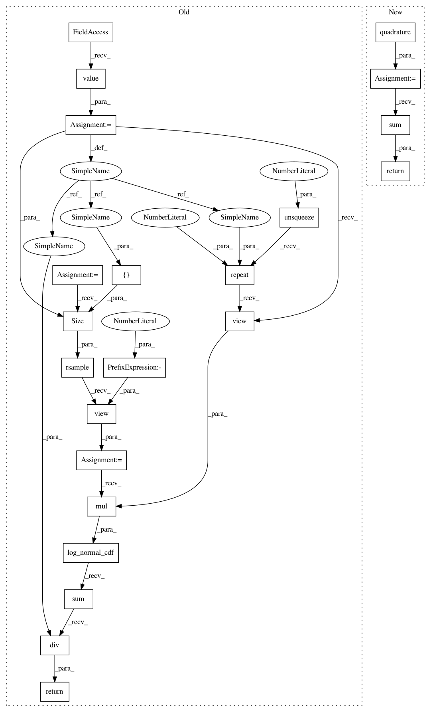

4cc5d634242601d48a98f7bae1dcc47dcfc589eb,gpytorch/likelihoods/bernoulli_likelihood.py,BernoulliLikelihood,variational_log_probability,#BernoulliLikelihood#Any#Any#,37
Before Change
return Bernoulli(probs=output_probs)
def variational_log_probability(self, latent_func, target):
num_samples = settings.num_likelihood_samples.value()
samples = latent_func.rsample(torch.Size([num_samples])).view(-1)
target = target.unsqueeze(0).repeat(num_samples, 1).view(-1)
return log_normal_cdf(samples.mul(target)).sum().div(num_samples)
def pyro_sample_y(self, variational_dist_f, y_obs, sample_shape, name_prefix=""):
import pyro
After Change
def variational_log_probability(self, latent_func, target):
likelihood_func = lambda locs: log_normal_cdf(locs.mul(target.unsqueeze(-1)))
res = self.quadrature(likelihood_func, latent_func)
return res.sum()
def pyro_sample_y(self, variational_dist_f, y_obs, sample_shape, name_prefix=""):
import pyro
In pattern: SUPERPATTERN
Frequency: 4
Non-data size: 22
Instances
Project Name: cornellius-gp/gpytorch
Commit Name: 4cc5d634242601d48a98f7bae1dcc47dcfc589eb
Time: 2019-01-24
Author: gardner.jake@gmail.com
File Name: gpytorch/likelihoods/bernoulli_likelihood.py
Class Name: BernoulliLikelihood
Method Name: variational_log_probability
Project Name: cornellius-gp/gpytorch
Commit Name: 85f5221a7b98a847138ba74edf01bd7da5264c72
Time: 2019-01-24
Author: gardner.jake@gmail.com
File Name: gpytorch/likelihoods/bernoulli_likelihood.py
Class Name: BernoulliLikelihood
Method Name: variational_log_probability
Project Name: cornellius-gp/gpytorch
Commit Name: 6faba6ad0168c32a9c3a734834dcc6f0787855c3
Time: 2019-01-27
Author: gardner.jake@gmail.com
File Name: gpytorch/likelihoods/bernoulli_likelihood.py
Class Name: BernoulliLikelihood
Method Name: variational_log_probability
Project Name: cornellius-gp/gpytorch
Commit Name: 686b1f0cd8ec8977aeae664e87a4d161e8b6eed3
Time: 2019-01-26
Author: gardner.jake@gmail.com
File Name: gpytorch/likelihoods/bernoulli_likelihood.py
Class Name: BernoulliLikelihood
Method Name: variational_log_probability